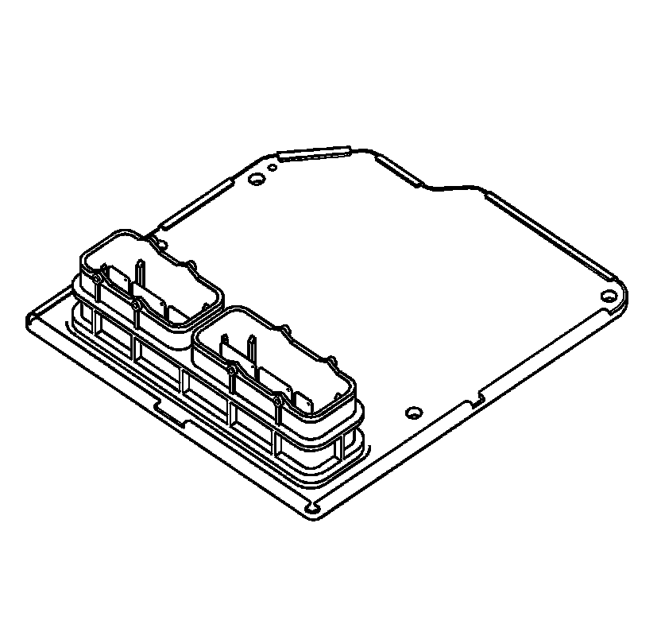
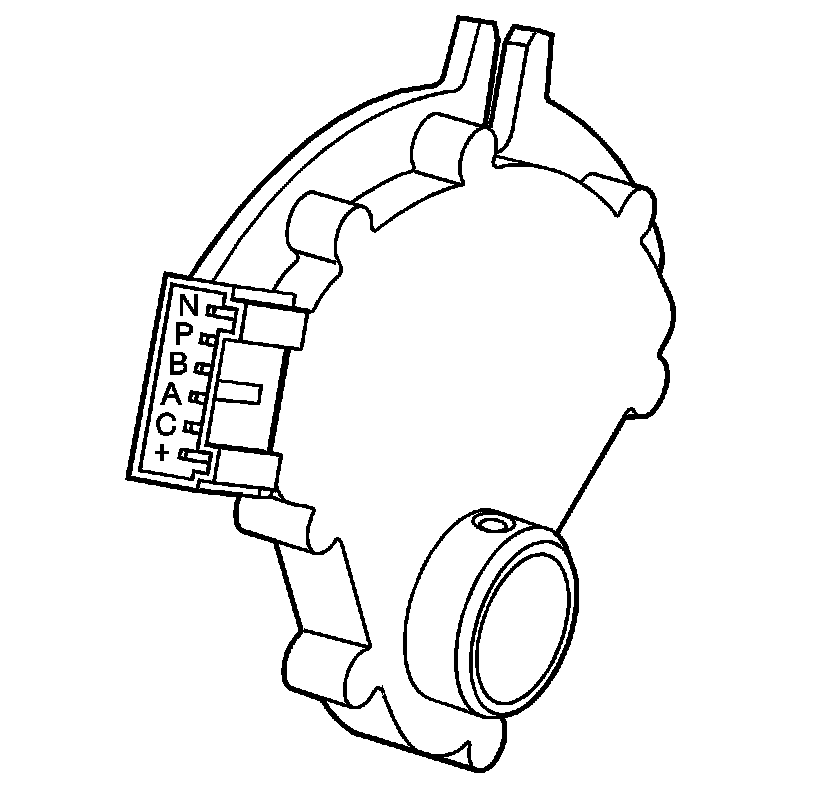
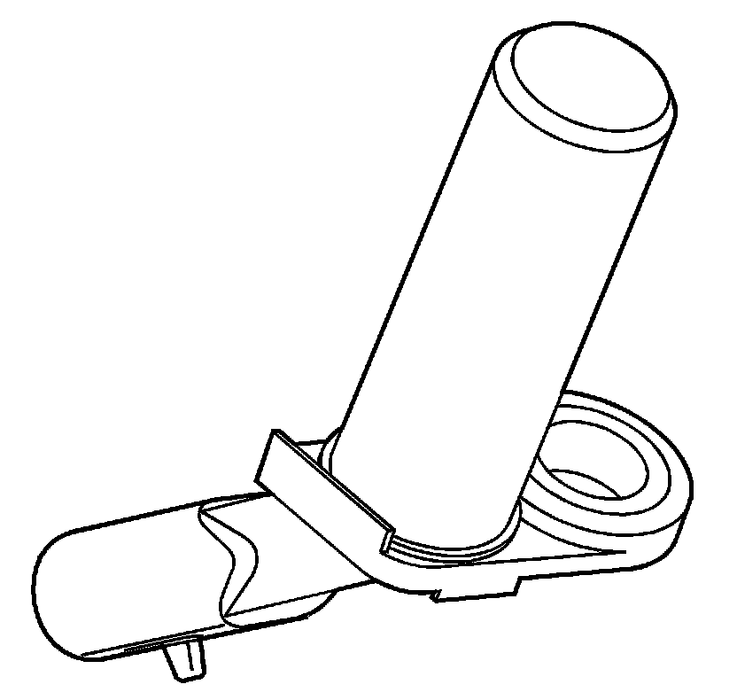
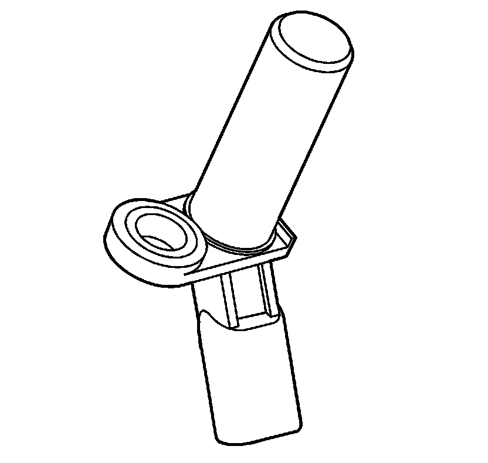
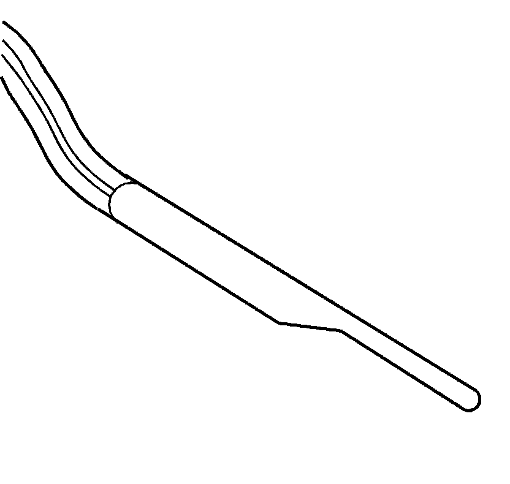
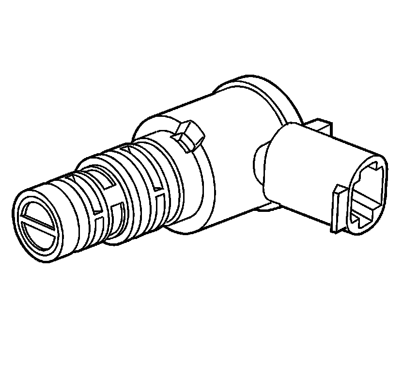
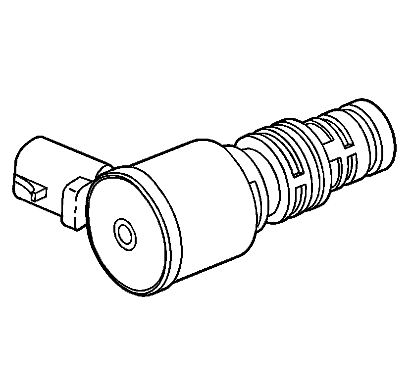
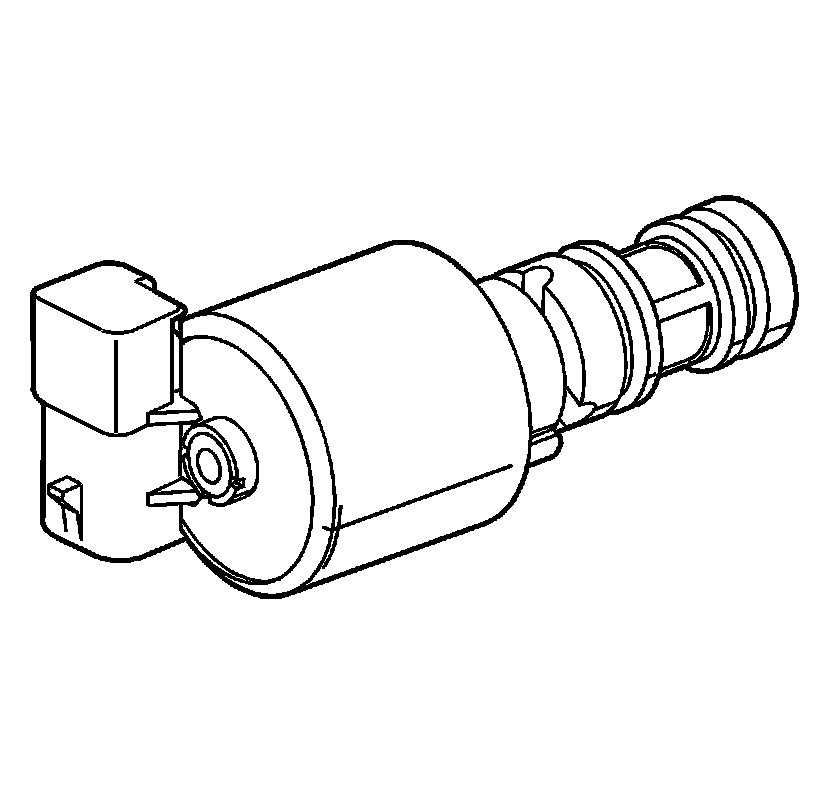
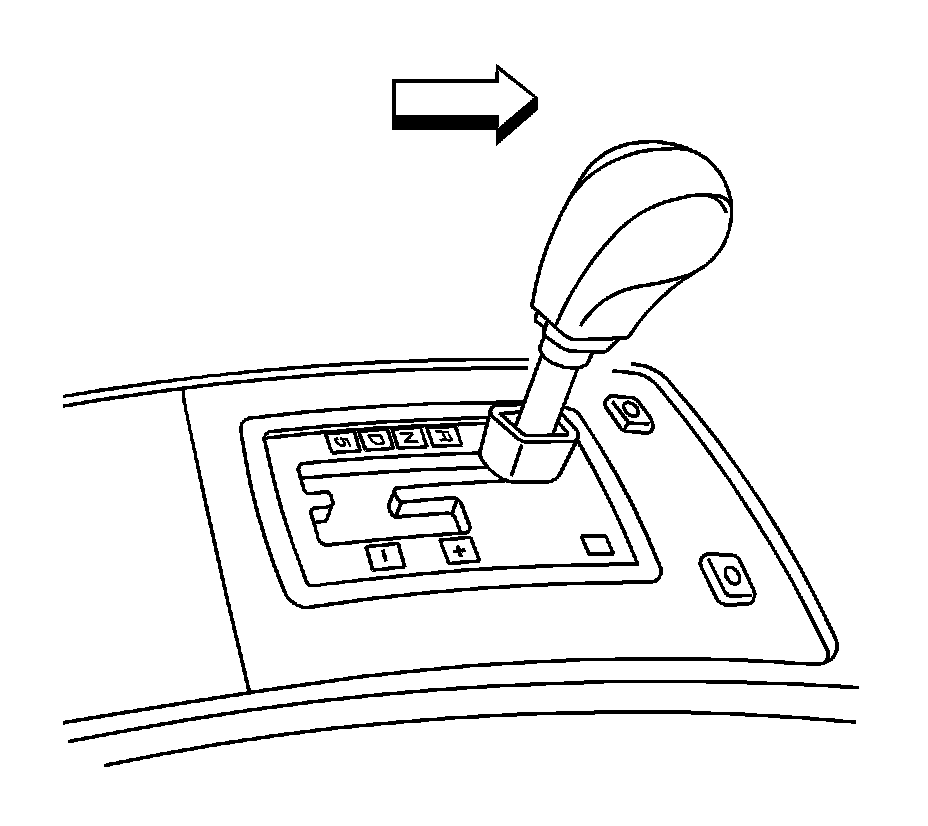

Electronic Component Description
Electronic Component Description
Transmission Control Module (TCM)
Transmission Control Module (TCM):

The transmission control module (TCM) is mounted in the engine compartment and connects directly to the engine wiring harness. A single 42-way connector is used to make the connection between the vehicle wiring and the TCM. The TCM is an electronic control module that receives input or provides output in order to control the operation of the 5L50-E automatic transmission.
The TCM receives the following inputs from the engine control module (ECM):
* Engine speed and torque values
* Engine intake air temperature (IAT), accelerator pedal position (APP) information
* Engine coolant temperature (ECT)
* Kick-down request
* Traction control status
* Driver selected shift mode
* Air-conditioning (A/C) status
* Cruise control status
The ECM provides this data to the TCM through the controller area network (CAN). The CAN is a 2-wire communication connection between the 2 controllers.
Other TCM inputs are the following:
* Battery and ignition voltage
* Brake switch status
* Transmission manual shift shaft switch assembly
* Transmission fluid temperature (TFT)
* Transmission input shaft speed (ISS) sensor
* Transmission output shaft speed (OSS) sensor
The TCM provides the following outputs in order to control the automatic transmission:
* Shift solenoids to control transmission shifting
* TCC PWM solenoid operation controls the apply and release of the torque converter clutch ASM
* Pressure control solenoid (PCS) regulates transmission line pressure
Other TCM outputs provided to the ECM are the following:
* MIL illumination request
* Vehicle speed
* Transmission input speed
* Transmission fluid temperature
* Commanded gear status
* TCC status
* Torque reduction requests
* Manual shift shaft switch status
* Transmission service status
Transmission Manual Shift Shaft Switch Assembly (602)
Transmission Manual Shift Shaft Switch Assembly (602):

The transmission manual shift shaft switch assembly (602) is a sliding contact switch attached to the manual shift shaft inside the transmission case. The five inputs to the TCM from the transmission manual shift shaft switch assembly indicate the transmission gear selector lever position. This information is used for engine controls as well as determining the transmission shift patterns. The state of each input is available for display on the scan tool. The five input parameters represented are Signal A, Signal B, Signal C, Signal P (Parity) and Signal N (P/N Start).
Automatic Transmission Output Speed (A/T OSS) Sensor (42)
Automatic Transmission Output Speed (A/T OSS) Sensor (42):

The A/T OSS sensor is a variable reluctance magnetic pickup located in the rear of the transmission case. The sensor is mounted in the case (24) opposite the rear internal gear (560). The rear internal gear is splined to the output shaft assembly (562). The sensor consists of a permanent magnet surrounded by a coil of wire. As the output shaft and rear internal gear rotate, an alternate current (AC) is induced in the coil by the 'teeth' on the rear internal gear as they pass by the magnetic pickup. Therefore, whenever the vehicle is moving, the A/T OSS sensor produces an AC voltage signal proportional to vehicle speed.
At the TCM, the AC signal is electronically converted to a 5 volt square wave pattern. The square wave pattern can then be interpreted as transmission output speed by the TCM through the frequency of square waves in a given time frame. The square waves can be thought of as a representation of the rear internal gear teeth. Therefore, the more teeth or waves that pass by the magnetic pickup in a given time frame, the faster the vehicle is moving. The square wave pattern is compared to a fixed clock signal internal to the TCM to determine transmission output speed.
Automatic Transmission Input Speed (A/T ISS) Sensor (44)
Automatic Transmission Input Speed (A/T ISS) Sensor (44):

The A/T ISS sensor operates identically to the A/T OSS sensor except that is uses the stamped teeth on the reverse clutch input housing assembly (401) as the rotor reluctor. Remember that the reverse clutch input housing assembly is driven at converter turbine speed. The A/T ISS sensor square wave pattern is also compared to a fixed clock signal internal to the TCM to determine actual converter turbine speed. The TCM uses transmission input and output speeds to help determine line pressure, transmission shift patterns, TCC apply pressure, gear ratios, and TCC slippage for diagnostic purposes.
Automatic Transmission Fluid Temperature (TFT) Sensor
Automatic Transmission Fluid Temperature (TFT) Sensor:

The TFT sensor is part of the transmission wiring harness assembly (55). The TFT sensor is a resistor, or thermistor, which changes value based on temperature. Refer to Transmission Fluid Temperature Sensor Specifications (Specifications) . The sensor has a negative-temperature coefficient. This means that as the temperature increases, the resistance decreases, and as the temperature decreases the resistance increases. The TCM supplies a 5-volt reference signal to the sensor and measures the voltage drop in the circuit. When the transmission fluid is cold the sensor resistance is high and the TCM detects high signal voltage. As the fluid temperature warms to a normal operating temperature, the resistance becomes less and the signal voltage decreases. The TCM uses this information to maintain shift quality and torque converter clutch apply quality over operating temperature range.
If transmission fluid temperatures become excessively high, above approximately 140°C (248°F), the TCM will disable ECCC function and command lock up mode. Applying the TCC serves to reduce transmission fluid temperatures created by the fluid coupling in the torque converter with the TCC released.
Above approximately 149°C (284°F), the TCM will set a transmission fluid temperature code (P0218). This causes the TCM to use a fixed default value of 135°C (275°F) as the transmission fluid temperature input signal.
Shift Solenoid Valves
Shift Solenoid Valves:

The Hydra-matic 5L50-E uses three electromagnetic shift solenoid valves 1-2, 2-3 and 4-5 to control upshifts and downsifts in all forward gear ranges. The shift solenoid valves are all identical, normally closed, 3-port, ON/OFF type solenoids controlled by the TCM. These shift solenoid valves work together in a combination of ON and OFF sequences to control the various shift valves. The TCM uses numerous inputs to determine which solenoid state combination the transmission should be in. Refer to Shift Solenoid Valve State and Gear Ratio (5L40-E/5L50-E - Automatic Transmission) .
Torque Converter Clutch Pulse Width Modulation (TCC PWM) Solenoid Valve (352)
Torque Converter Clutch Pulse Width Modulation (TCC PWM) Solenoid Valve (352):

The TCC PWM solenoid valve is a normally-closed, pulse width modulated (PWM) solenoid used to control the apply and release of the converter clutch. The TCM operates the solenoid with a negative duty cycle, at a fixed frequency of 32 Hz, to control the rate of TCC apply/release. The solenoid's ability to 'ramp' the TCC apply and release pressures results in a smoother TCC operation.
When vehicle operating conditions are appropriate to apply the TCC, the TCM increases the duty cycle to allow the TCC PWM solenoid valve to command TCC signal fluid pressure at a level sufficient to move the TCC enable valve and the TCC control valve to the apply position. Release pressure is directed to exhaust, and regulated apply fluid is directed to the apply side of the converter pressure plate/damper assembly. The TCM then increases the duty cycle to control a slippage of 20-80 RPM between the pressure plate/damper assembly and the converter cover. This provides for improved filtration of engine vibrations and allows the TCC to apply at low engine speeds in 2nd, 3rd, 4th and 5th gear. At high speed, lock up mode is set by activating the TCC PWM solenoid valve at maximum duty cycle.
Release of the TCC is achieved by decreasing the duty cycle to a level low enough to allow spring force to move the TCC enable valve and the TCC control valve to the release position. Apply fluid is directed to exhaust and converter feed fluid is directed into the release circuit to the release side of the pressure plate/damper assembly.
There are also some operating conditions that may prevent or enable TCC apply under various conditions, engine temperature, transmission temperature, or brake switch activation, depending on vehicle application.
TCC PWM solenoid valve resistance should measure between 10.0-11.5 ohm when measured at 20°C (68°F). The resistance should measure approximately 16 ohm at 150°C (300°F).
Pressure Control (PC) Solenoid Valve (357)
Pressure Control (PC) Solenoid Valve (357):

The pressure control (PC) solenoid valve is a precision electronic pressure regulator that controls transmission line pressure based on current flow through its coil windings. As current flow is increased, the magnetic field produced by the coil moves the solenoid's plunger further away from the exhaust port. Opening the exhaust port decreases the output fluid pressure regulated by the PC solenoid valve, which ultimately decreases line pressure. The TCM controls the PC solenoid valve based on various inputs including throttle position, transmission fluid temperature and gear state.
Duty Cycle, Frequency and Current Flow
A duty cycle may be defined as the percentage of time current is flowing through a solenoid coil during each cycle. The number of cycles that occur within a specified amount of time, usually measured in seconds, is called 'frequency.' Typically, the operation of an electronically controlled pulse width modulated solenoid is explained in terms of duty cycles and frequency.
The TCM controls the PC solenoid valve on a positive duty cycle at a fixed frequency of 292.5 Hz cycles per second. A higher duty cycle provides a greater current flow through the solenoid. The high positive side of the PC solenoid valve electrical circuit at the TCM controls the PC solenoid valve operation. The TCM provides a ground path for the circuit, monitors average current and continuously varies the PC solenoid valve duty cycle to maintain the correct average current flowing through the PC solenoid valve.
The duty cycle and current flow to the PC solenoid valve are mainly affected by throttle position and engine torque. As the throttle angle engine torque increases, the duty cycle is decreased by the TCM which decreases current flow to the PC solenoid valve. Current flow to the PC solenoid valve creates a magnetic field that moves the solenoid armature against spring force.
Transmission Adapt Function
Programming within the TCM also allows for automatic adjustments in shift pressure that are based on the changing characteristics of the transmission components. As the apply components within the transmission wear, shift time, the time required to apply a clutch, increases. In order to compensate for this wear, the TCM adjusts trim pressure by controlling the PC solenoid valve in order to maintain the originally calibrated shift timing. The automatic adjusting process is referred to as adaptive learning and it is used to assure consistent shift feel plus increase transmission durability. The TCM monitors the A/T ISS and the A/T OSS during commanded shifts to determine if a shift is occurring too fast, harsh or too slow, soft and adjusts the PC solenoid valve signal to maintain a set shift feel.
Floor Shift Control
Floor Shift Control (5L50-E Only):

The floor shift control is located in the center console assembly. It contains the upshift and downshift switches for the driver shift control system. The driver shift control system is activated when the floor shift control lever is moved to the right into the manual position from the drive position. When the manual position is selected, an upshift is requested by pushing the floor shift control lever forward to the + position and a downshift is requested by pulling the floor shift control lever to the - position. When an upshift or a downshift is requested, a signal is sent to the TCM which commands the shift solenoids ON or OFF to achieve the appropriate gear.